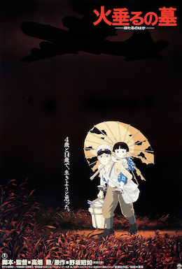

My Portfolio
I'm a bignner Web Developer and this is my basic portfolio in html & what have i learned so far.
I will be showing 2 of my basic projects.
1st Project
Movie Recommendation
My Three go to Movies
Sprited Away
 Spirited Away (Japanese: 千と千尋の神隠し, Hepburn: Sen to Chihiro no Kamikakushi, lit. 'Sen and Chihiro's Spiriting Away')
is a 2001 Japanese animated fantasy film written and directed by Hayao Miyazaki. It was produced by Toshio Suzuki,
animated by Studio Ghibli, and distributed by Toho.[7] The film stars Rumi Hiiragi, alongside Miyu Irino, Mari Natsuki, Takashi Naito,
Yasuko Sawaguchi, Tsunehiko Kamijō, Takehiko Ono, and Bunta Sugawara. In Spirited Away, Chihiro "Sen" Ogino moves to a new neighborhood
and inadvertently enters the world of kami (spirits of Japanese Shinto folklore).[8]After her parents are turned into pigs by the witch Yubaba,
Chihiro takes a job working in Yubaba's bathhouse to find a way to free herself and her parents and return to the human world.
Spirited Away (Japanese: 千と千尋の神隠し, Hepburn: Sen to Chihiro no Kamikakushi, lit. 'Sen and Chihiro's Spiriting Away')
is a 2001 Japanese animated fantasy film written and directed by Hayao Miyazaki. It was produced by Toshio Suzuki,
animated by Studio Ghibli, and distributed by Toho.[7] The film stars Rumi Hiiragi, alongside Miyu Irino, Mari Natsuki, Takashi Naito,
Yasuko Sawaguchi, Tsunehiko Kamijō, Takehiko Ono, and Bunta Sugawara. In Spirited Away, Chihiro "Sen" Ogino moves to a new neighborhood
and inadvertently enters the world of kami (spirits of Japanese Shinto folklore).[8]After her parents are turned into pigs by the witch Yubaba,
Chihiro takes a job working in Yubaba's bathhouse to find a way to free herself and her parents and return to the human world.Grave of the Fireflies

Grave of the Fireflies (Japanese: 火垂るの墓, Hepburn: Hotaru no Haka) is a 1988 Japanese animated historical war drama film written
and directed by Isao Takahata, and produced by Studio Ghibli. It is based on the 1967 semi-autobiographical short story of the same name by Akiyuki Nosaka.Whisper of the Heart
.jpg) Whisper of the Heart (Japanese: 耳をすませば, Hepburn: Mimi o Sumaseba, lit.
'If You Listen Carefully') is a 1995 Japanese animated romantic drama film directed by Yoshifumi Kondō and written
by Hayao Miyazaki based on Aoi Hiiragi's 1989 manga Mimi o Sumaseba. Produced by Studio Ghibli and distributed by Toho,
the film stars Yoko Honna, Issei Takahashi, Takashi Tachibana, Shigeru Muroi, Shigeru Tsuyuguchi and Keiju Kobayashi.
Whisper of the Heart (Japanese: 耳をすませば, Hepburn: Mimi o Sumaseba, lit.
'If You Listen Carefully') is a 1995 Japanese animated romantic drama film directed by Yoshifumi Kondō and written
by Hayao Miyazaki based on Aoi Hiiragi's 1989 manga Mimi o Sumaseba. Produced by Studio Ghibli and distributed by Toho,
the film stars Yoko Honna, Issei Takahashi, Takashi Tachibana, Shigeru Muroi, Shigeru Tsuyuguchi and Keiju Kobayashi.
2nd Project
Birthday Invite
My DOB is 16 Nov

What to Bring
- Baloon
- Cake(cuz i am poor and you will want to eat)
- An Appetite(i am not poor, i just don't like cake)
Note
- I have to keep on practicing, so that i can be sharp.
- Need to focus on my typing speed.
- Learn more shortcuts to reduce time.
- Focus on spelling mistakes.